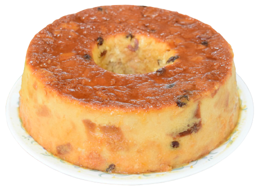

Pastel de
Zanahoria
Bizcocho suave y húmedo de zanahoria con pecanas, relleno y cubierto de frosting de queso crema con canela. Este producto contiene harina, zanahoria, aceite, huevos, azúcar, polvo de hornear, pecanas, canela, queso crema y vainilla.
Torta
Helada
Esta torta está formada por tres capas: la superior de una capa de gelatina de fresa, la mediana de carlota y la inferior de un bizcochuelo, hoy en día es una de las más populares, principalmente para fiestas infantiles.
Tres
Leches
Esta torta consiste en un bizcocho cubierto con tres leches distintas, leche evaporada, leche condensada y crema de leche. Estas leches distintas hacen mención a su nombre. Usualmente se decora con merengue y canela.
Crema de
Mantequilla
Es uno de los rellenos básicos y más tradicionales para tartas y pasteles, también se utiliza como cobertura o decoración, una de sus virtudes es que se puede aromatizar casi con cualquier ingrediente.
Budin
Se trata de un postre elaborado con pan, huevo, leche y algunas especias (como vainilla y canela). Dependiendo de la ocasión, puede servirse acompañado con caramelo, dulce de leche o crema pastelera.
Trufa de
Chocolate
Es un dulce con aspecto y sabor similar al bombón pero elaborado con una mezcla de chocolate negro fundido (tipo fondant), mantequilla, azúcar glas, yema de huevo y a veces crema de leche. Es preferido especialmente por niños.